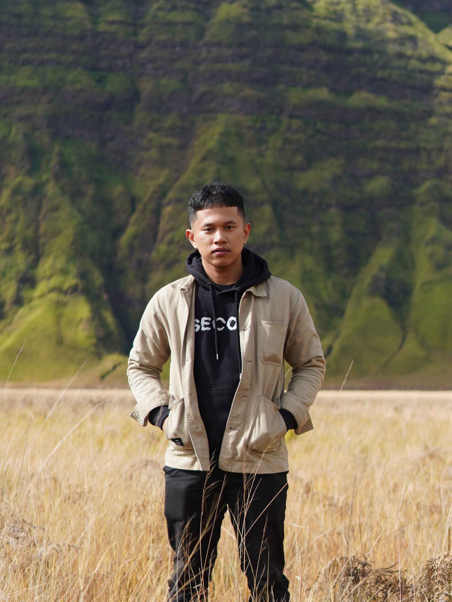

<section class="section" id="about">
  <div class="container">
    <div class="section-header reveal">
      <h2 class="section-title">About Me</h2>
      <p class="section-subtitle">
        Passionate about creating impactful digital solutions
      </p>
    </div>
    <div class="about-content">
      <div class="about-text reveal">
        <p>
          I am a creative and driven software developer, currently pursuing a
          degree in Informatics Engineering at Universitas Brawijaya. My
          expertise lies in transforming complex problems into beautiful,
          functional, and user-centric web applications.
        </p>
        <p>
          With a passion for clean code and scalable architecture, I specialize
          in backend development while maintaining a keen eye for user
          experience. I thrive in environments that challenge me to learn, grow,
          and push the boundaries of what's possible.
        </p>
        <p>Let's collaborate and build something extraordinary together.</p>
      </div>
      <div class="about-photo-container">
        
      </div>
    </div>
  </div>
</section>
